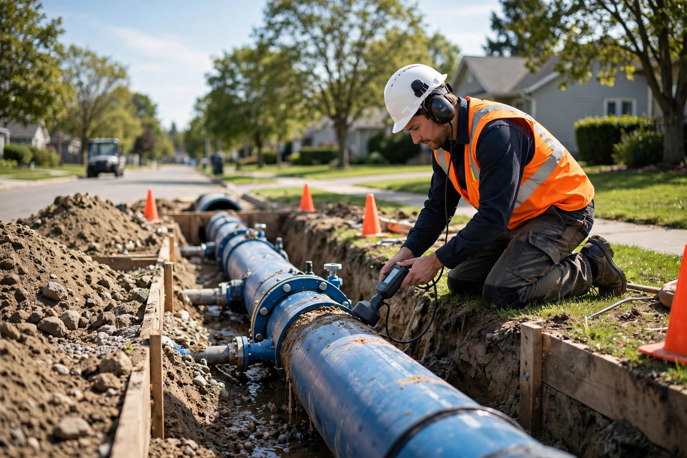
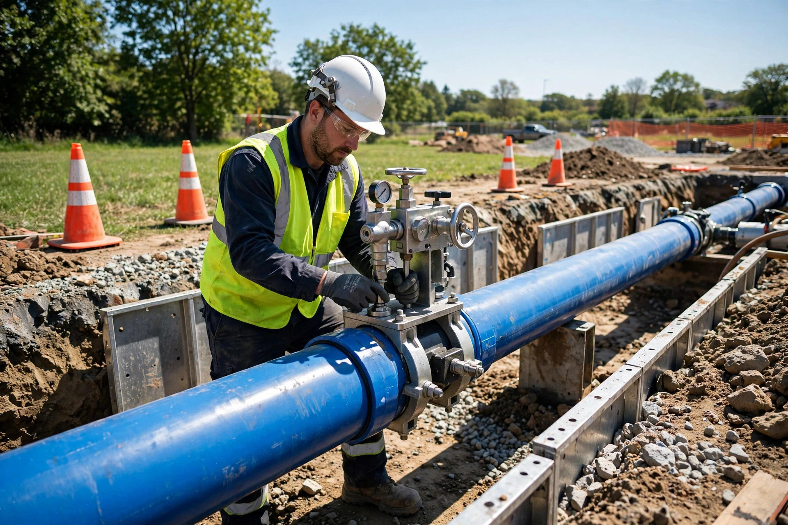
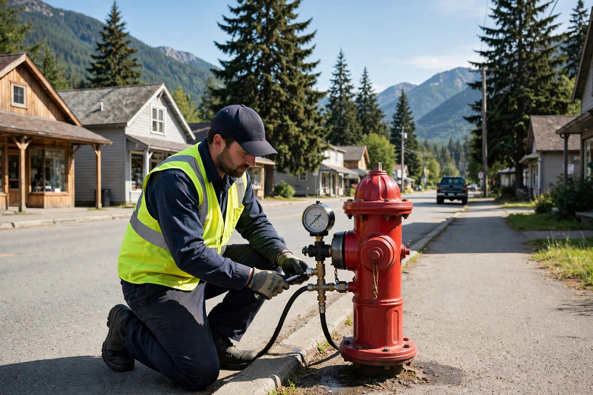
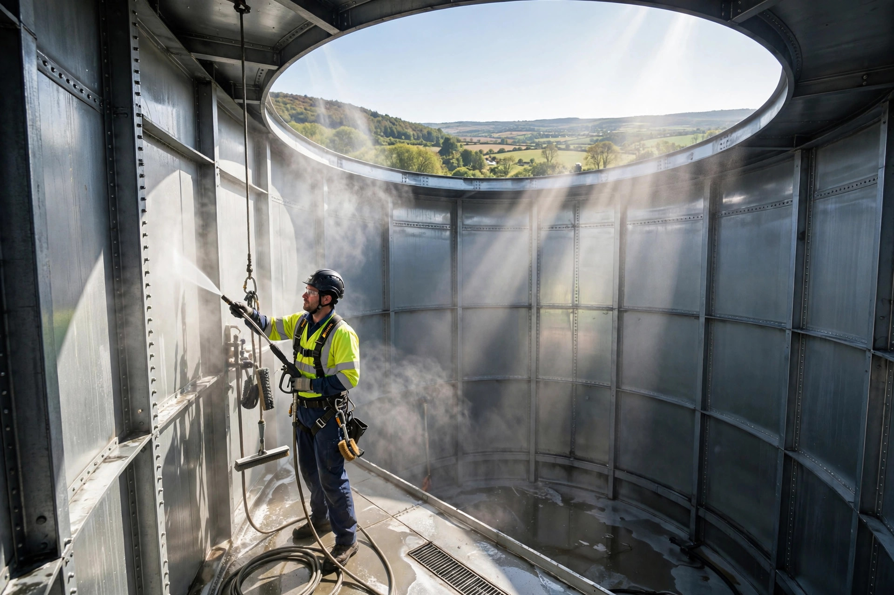
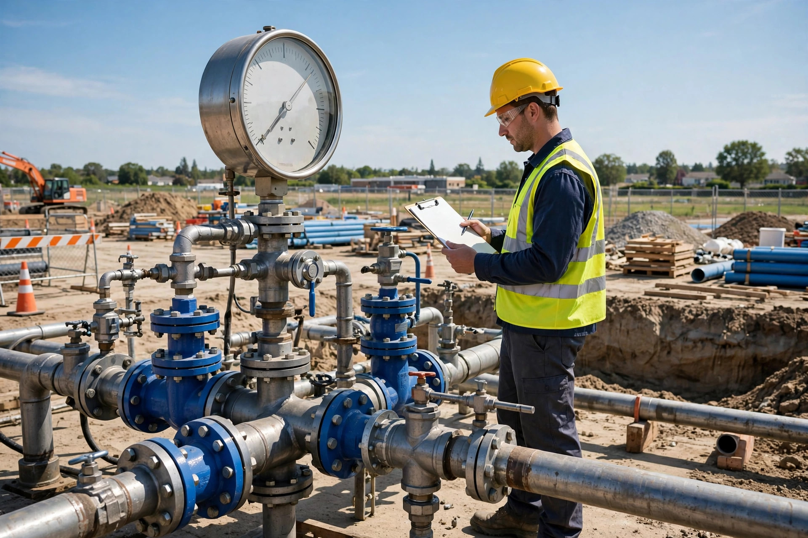

Leak Detection
Find it before you dig itA hidden leak in a buried water main is one of the most expensive problems a water system can have — and one of the hardest to locate. Treated water disappears into the ground, roads and foundations get undermined, and entire communities can end up under boil-water advisories. Leak detection is our specialty: we find the leak's exact location so repairs are fast, targeted and affordable.
How it works: pressurized water escaping a pipe creates a distinct acoustic signature. Our technicians survey the line with professional listening equipment, correlate the signal, and pinpoint the leak — usually within a few feet. You excavate one precise spot instead of trenching a whole street.
- Acoustic leak pinpointing on mains and services
- System-wide leak surveys for municipalities and districts
- Minimal excavation — fix the right spot the first time
- Reduces unaccounted-for water loss and infrastructure damage
Signs you may have a leak: unexplained spikes in water usage, persistently wet or soft ground, drops in system pressure, or water surfacing where it shouldn't. If any of these sound familiar, call us before it gets worse.

Hot Tapping
New connections, zero shutdownNeed to connect a new branch line, service or valve to an existing water main? Hot tapping does it while the main stays live and fully pressurized. A sealed tapping machine cuts into the pipe through a bolted fitting — so homes, businesses and fire protection keep their water throughout the work.
- No system shutdown and no boil-water advisories
- All sizes of lines and taps handled
- Ideal for developments, tie-ins and emergency connections

HDPE Pipe Fusion
Joints stronger than the pipeHigh-density polyethylene (HDPE) pipe is the modern standard for water systems — flexible, corrosion-proof and built to last. We fuse it using butt fusion, electro fusion and socket fusion, creating monolithic joints that are as strong as the pipe itself. We fuse pipe up to 54 inches in diameter.
- Butt, electro and socket fusion — up to 54" pipe
- Hole repair in irrigation reel hose
- Leak-free joints for municipal and industrial systems

Fire Hydrant Services & Water Main Flushing
Protection that works when it countsFire hydrants are only useful if they work. We specialize in all related fire hydrant services — inspection, repair and replacement — performed according to British Columbia Fire Safety Standards. We also flush water mains to clear sediment and keep water fresh throughout the distribution system.
- Hydrant repair and replacement to BC Fire Safety Standards
- Water main flushing programs for municipalities
- Improved water quality and system reliability

Reservoir Cleaning
Protect your stored waterSediment settles in every water reservoir over time — affecting water quality and reducing storage capacity. We clean both in-ground and above-ground water reservoirs, removing accumulated sediment so your stored water stays clean and your infrastructure lasts longer.
- In-ground and above-ground reservoir cleaning
- Sediment removal to protect water quality
- Scheduled maintenance programs available

Water Pressure Testing, Chlorination & Swabbing
Prove it. Disinfect it. Put it in service.Before any new or repaired water main carries drinking water, it has to earn that trust. We pressure test new and existing mains to verify the pipe and joints hold under operating pressure — then swab and chlorinate the line to disinfect it. Only after testing confirms the water is safe does the main go live.
- Pressure testing of new and existing water mains
- Swabbing and chlorination to disinfect new or repaired lines
- Domestic water line disinfecting and swabbing
